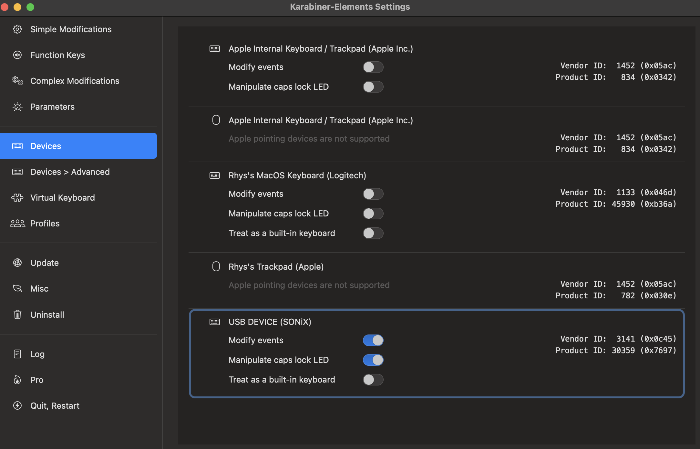
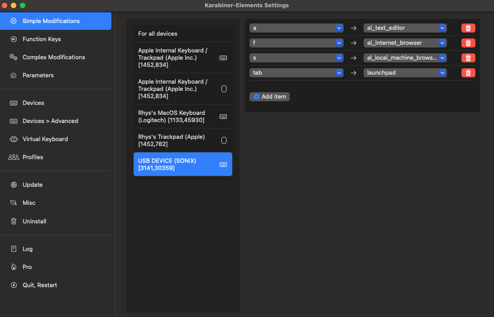
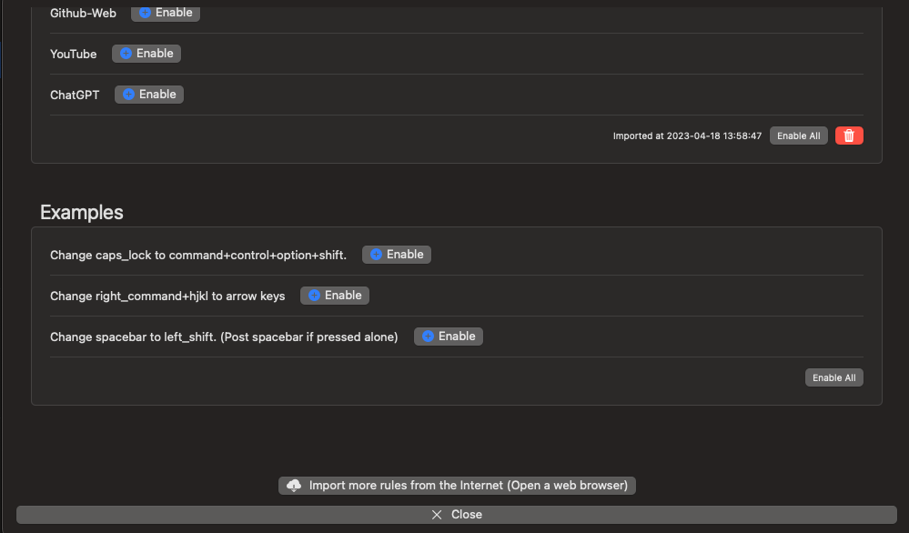

Author: Rhys Shaw
Date: 18/04/2023
This is a short guide to programing macros on MacOS with a secondary keyboard. You will need the following:
Macros are a powerful tool in computer programming that allow developers to automate repetitive tasks and streamline their workflow. A macro is essentially a sequence of instructions that can be executed with a single command or keystroke. Macros are commonly used in applications such as Microsoft Excel and Word to automate repetitive tasks, such as formatting data or generating reports. In programming languages like C++, macros are used to define constants, simplify complex code, and create reusable code snippets. Macros work by recording a series of actions and then replaying them whenever the macro is executed. They can be customized to perform specific tasks and can be shared among different users or projects. Overall, macros are an invaluable tool for developers looking to increase productivity and efficiency in their programming work.
We will be using a utility tool called Karabiner Download Here!.
Karabiner is a powerful utility tool for macOS that allows users to customize their keyboard and create macros. With Karabiner, users can create macros by recording a series of keystrokes and assigning them to a custom hotkey or shortcut. This feature is especially useful for automating repetitive tasks or performing complex operations with a single keystroke. For example, a user could create a macro that types out their full name and email address whenever they press a specific key combination. Karabiner also offers advanced customization options, allowing users to create complex macros that include conditional statements, delay commands, and more. With its intuitive interface and powerful capabilities, Karabiner is a great tool for anyone looking to streamline their workflow and increase productivity on their macOS device.
No matter how many keyboards you have plugged into your computer MacOS will interperate them as a single keyboard. It cannot distingusih between which one is being pressed. This means to add a different keyboard that has custom prgrammed keys we need to intercept the single bewtween the keyboard and MacOS and change it. This is exatly what Karabiner does.
We can program alot of things as a Macro these can include.


These macros/keybindings can be selected with the drop down tabs.
Adding Complex Modifications; Now to increase functionality to be almost endless with possibilites we will made complex modifications. To begin head over to the Complex Modifications Section.
Select Add rule at the bottom. This will take you to the follwowing menu.

Try Enabling the Examples to see that it works. It should be implemented as soon as you enable the feature.
You can also seach the karabiner rules libary to look for premade solutions for your needs. (personally non of these were useful for me).
What we really want is to make our own. To do this head over to the configureation directory on your machine that Karabiner uses to load modification. You can see where this is for you on the 'Misc' tab, under Export & import. Head to $YOURPATH/assets/complex_modifications and open the folder in a text editor. We will be creating a JSON file.
Create a blank JSON file here, the name of the file is not important. your_custom_mods.json. Copy the following contents.
{
"title": "<Title Linking all hotkeys together>",
"rules": [
{
"description": "<USEFUL DECRIPTION HERE>",
"manipulators": [
{
"type": "basic",
"from": {
"key_code": "<YOUR KEY_CODE HERE>"
},
"to": [
{
"key_code": "<YOUR COMMAND HERE>",
"modifiers": "<YOUR MODIFIER HERE>"
}
]
}
]
}
]
}
your_custom_mods.json. The title should be indenifyable for this macro layout. We add muliple elements to rules for each macro we want to make. Here is an example of two marcos.{
"title": "Custom App Opening",
"rules": [
{
"description": "G to open ~/ VScode",
"manipulators": [
{
"type": "basic",
"from": {
"key_code": "g"
},
"to": [
{
"shell_command": "open -a 'Visual Studio Code'"
}
]
}
]
},
{
"description": "Notebook: Clear All",
"manipulators": [
{
"type": "basic",
"from": {
"key_code": "c"
},
"to": [
{
"key_code":"i",
"modifiers": ["command", "option", "control"]
}
]
}
]
}
]
}
I have implemented two function here. A Macro to open VScode, and anouther to clear all outputs when working on a jupiter notebook. For the Notebook I had to assign the hotkey cmd+ctrl+opt+i as the clear function (i did this is VScode settings). Now I assign the c on my secondary keyboard to the hotkey combo.
The Function to open VScode is quite different. Here I implemented a shell command that will open vscode. This same command works when exicuted in the terminal, utilising the open MacOS command, -a allows for it to work with apps this is followed by the name of the app.
.json file, we will now see all these modifiation in the complex modifaction tab {ref image above}. Enable your Macros to test. IF you edit the macros you will have to remove and enable for the changes to be implemented.Now you should beable to start programing your own Macros. The following will help with some more advanced features of using shell_command.
Shell commands can be tempermental depedning on what you are trying to do. The best way to utilise this function is to get it to execute a bash/shell/zsh script. To lauch a terminal executing a script you need to do the following command.
"shell_commmand":"open -a iterm ~/scripts/my_script.sh"
~/scripts/my_script.sh:
echo "Your task is starting"
sleep 10
# your shell script here
$shell
The code will be executed in the terminal app you specify, I have called iterm (which is not nessesarily installed use terminal instead). $SHELL tells the terminal to stay open when the task has been completed (starts a new shell actually) this can be ignored.
With these tools you have the abilities to Macro just about anything.
Enjoy!
Rhys
If there are any spelling mistakes..... keep them to yourselves :-|